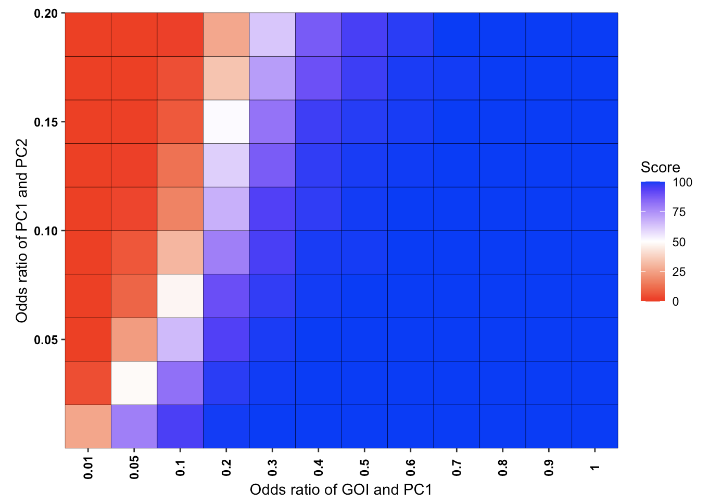
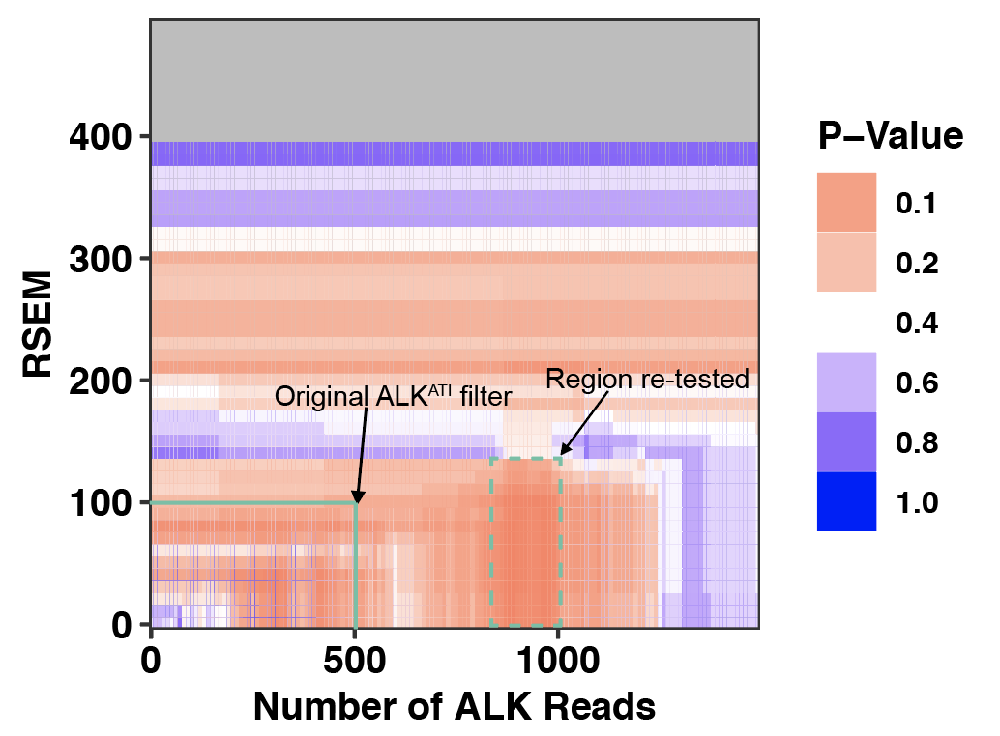
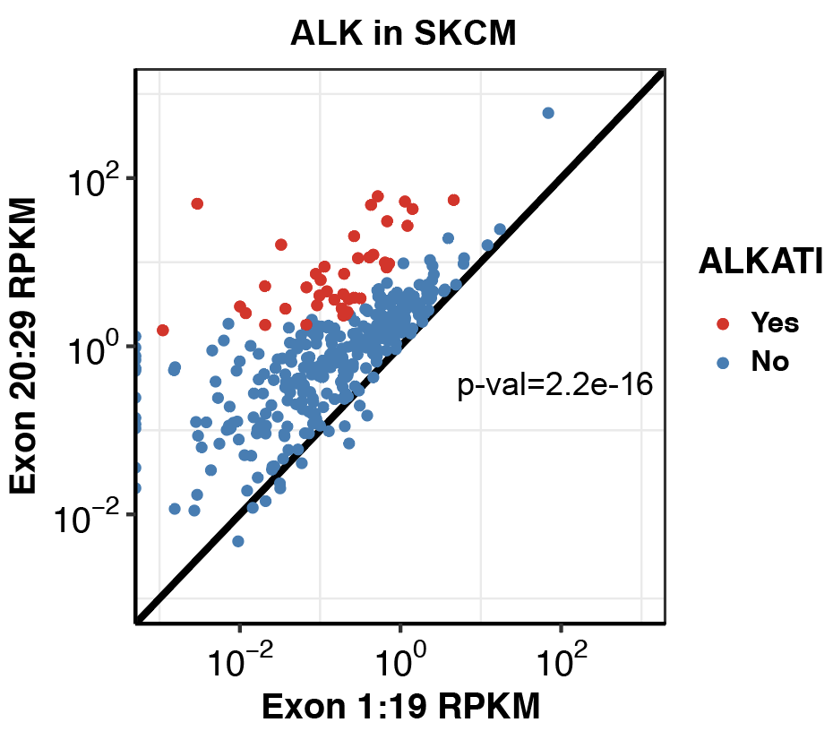
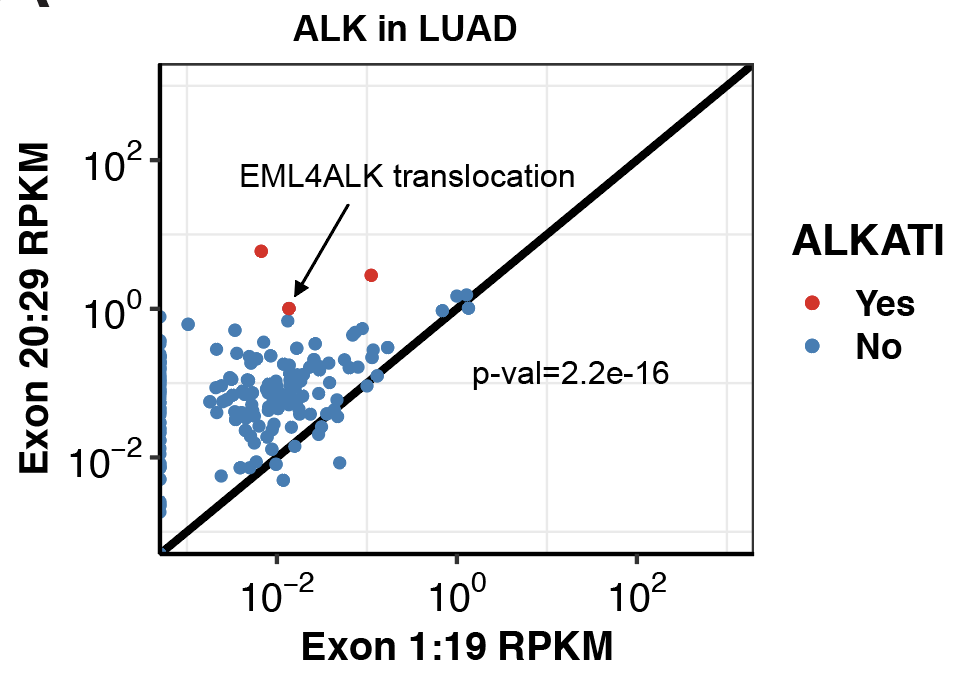
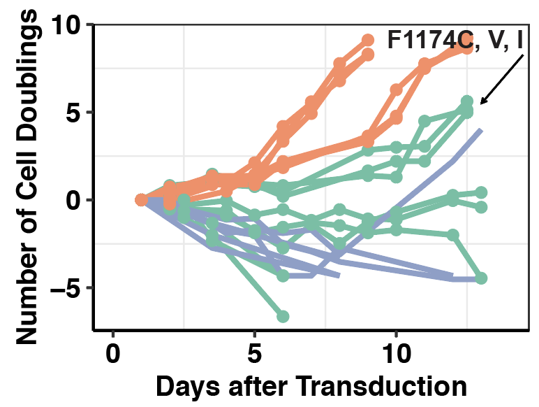
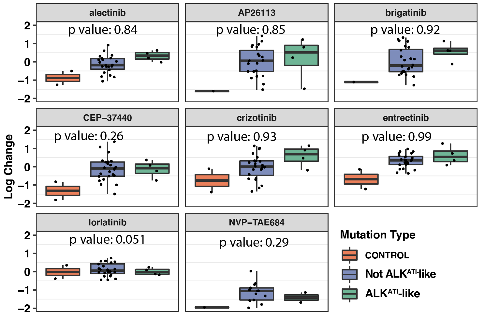

Last updated: 2021-06-19
Checks: 2 0
Knit directory: ~/Box/RProjects/pair_con_select/
This reproducible R Markdown analysis was created with workflowr (version 1.6.2). The Checks tab describes the reproducibility checks that were applied when the results were created. The Past versions tab lists the development history.
Great! Since the R Markdown file has been committed to the Git repository, you know the exact version of the code that produced these results.
Great! You are using Git for version control. Tracking code development and connecting the code version to the results is critical for reproducibility.
The results in this page were generated with repository version 427be8d. See the Past versions tab to see a history of the changes made to the R Markdown and HTML files.
Note that you need to be careful to ensure that all relevant files for the analysis have been committed to Git prior to generating the results (you can use wflow_publish or wflow_git_commit). workflowr only checks the R Markdown file, but you know if there are other scripts or data files that it depends on. Below is the status of the Git repository when the results were generated:
Ignored files:
Ignored: .Rhistory
Ignored: .Rproj.user/
Ignored: analysis/.RData
Ignored: analysis/.Rhistory
Ignored: analysis/.Rproj.user/
Ignored: data/depmap_alkati/Data_Raw/CCLE/CCLE_RNAseq_ExonUsageRatio_20180929.gct
Ignored: data/skmel28_sos1_mekq56p_vemurafenib.csv.sb-ea24b981-dvFz4V/
Ignored: data/tcga_brca_expression/
Ignored: data/tcga_luad_expression/
Ignored: data/tcga_skcm_expression/
Ignored: output/alkati_filtercutoff_allfilters.csv
Untracked files:
Untracked: paircon_boxplot_alkati.pdf
Unstaged changes:
Modified: analysis/updated_resampling_strategy2.Rmd
Note that any generated files, e.g. HTML, png, CSS, etc., are not included in this status report because it is ok for generated content to have uncommitted changes.
These are the previous versions of the repository in which changes were made to the R Markdown (analysis/index.Rmd) and HTML (docs/index.html) files. If you’ve configured a remote Git repository (see ?wflow_git_remote), click on the hyperlinks in the table below to view the files as they were in that past version.
| File | Version | Author | Date | Message |
|---|---|---|---|---|
| Rmd | 427be8d | haiderinam | 2021-06-19 | updated method for pairwise comparisons |
| html | 6d50f8a | haiderinam | 2021-06-19 | Build site. |
| html | 89ed456 | haiderinam | 2021-06-14 | Build site. |
| html | 8bdea13 | haiderinam | 2021-06-14 | Build site. |
| html | 0d33f15 | haiderinam | 2021-06-14 | Build site. |
| Rmd | 8520286 | haiderinam | 2021-06-14 | Updated website contents on 061421 |
| html | 37e1262 | haiderinam | 2021-03-26 | Build site. |
| Rmd | 53330b9 | haiderinam | 2021-03-26 | wflow_publish(“analysis/index.Rmd”) |
| html | 722e7fd | haiderinam | 2021-03-21 | Build site. |
| html | 0713ced | haiderinam | 2021-03-21 | Build site. |
| Rmd | 73ef9b5 | haiderinam | 2021-03-21 | wflow_publish(“analysis/index.Rmd”) |
| html | 8628af0 | haiderinam | 2019-09-24 | Build site. |
| Rmd | c9273be | haiderinam | 2019-09-24 | Added shiny app url |
| html | 1237a9d | haiderinam | 2019-09-13 | Build site. |
| Rmd | d6cccda | haiderinam | 2019-09-13 | Updated and Resized Images for Thumbnails |
| html | db748bf | haiderinam | 2019-09-13 | Build site. |
| Rmd | 84273f4 | haiderinam | 2019-09-13 | Updated and Resized Images for Thumbnails |
| html | ef1946b | haiderinam | 2019-09-13 | Build site. |
| Rmd | ee86dfc | haiderinam | 2019-09-13 | Updated and Resized Images for Thumbnails #3 |
| html | 3e865ad | haiderinam | 2019-09-13 | Build site. |
| Rmd | 2842c90 | haiderinam | 2019-09-13 | Updated Images for Thumbnails #3 |
| html | 8d78597 | haiderinam | 2019-09-13 | Build site. |
| Rmd | fbff709 | haiderinam | 2019-09-13 | Updated Images for Thumbnails #2 |
| html | 47460db | haiderinam | 2019-09-13 | Build site. |
| html | 654f78b | haiderinam | 2019-09-13 | Build site. |
| html | 603e62d | haiderinam | 2019-09-13 | Build site. |
| Rmd | d7b36c1 | haiderinam | 2019-09-13 | Updated Images for Thumbnails |
| html | caa231e | haiderinam | 2019-03-07 | Build site. |
| Rmd | 5477bb6 | haiderinam | 2019-03-07 | Added page for analysis on performing pairwise comparisons in |
| html | 80e52c0 | haiderinam | 2019-03-06 | Build site. |
| Rmd | 79bf9a6 | haiderinam | 2019-03-06 | Added CCLE analyses |
| html | 6744c50 | haiderinam | 2019-03-06 | Build site. |
| Rmd | b7d812d | haiderinam | 2019-03-06 | Published Fig 4 analysis analysis, added statistical test for fig 3 & 4 |
| html | 755da19 | haiderinam | 2019-02-20 | Build site. |
| html | 6a85fdc | haiderinam | 2019-02-20 | Build site. |
| Rmd | ead5e6b | haiderinam | 2019-02-20 | Fixed link for EGFR Expression Analysis |
| html | aff917b | haiderinam | 2019-02-20 | Build site. |
| Rmd | 6fec622 | haiderinam | 2019-02-20 | Added EGFR Expression Analysis |
| html | 227aa37 | haiderinam | 2019-02-20 | Build site. |
| Rmd | d60f046 | haiderinam | 2019-02-20 | Changed theme # 2 |
| html | 4d0be94 | haiderinam | 2019-02-20 | Build site. |
| html | be5169a | haiderinam | 2019-02-20 | Build site. |
| Rmd | 66533e8 | haiderinam | 2019-02-20 | Added images attempt #2 |
| html | 5ce6384 | haiderinam | 2019-02-19 | Build site. |
| Rmd | d5d11e6 | haiderinam | 2019-02-19 | Added images #2 |
| html | 5f668d9 | haiderinam | 2019-02-19 | Build site. |
| Rmd | efc8178 | haiderinam | 2019-02-19 | Added images and descriptions |
| html | 0b5f5cb | haiderinam | 2019-02-19 | Build site. |
| Rmd | f3edec6 | haiderinam | 2019-02-19 | Published Analysis on ALK expression levels in LUAD |
| html | 4b082e4 | haiderinam | 2019-02-19 | Build site. |
| Rmd | ba899cb | haiderinam | 2019-02-19 | Attempt #2 Published Analysis on ALK expression levels and initial mutual exclusivity |
| html | 08e9438 | haiderinam | 2019-02-17 | Build site. |
| Rmd | 33e1acb | haiderinam | 2019-02-17 | Published Analysis on ALK expression levels #3 |
| html | dfdb600 | haiderinam | 2019-02-17 | Build site. |
| html | 0cad4ec | haiderinam | 2019-02-16 | Build site. |
| Rmd | 257ca7e | haiderinam | 2019-02-16 | Published Analysis on ALK expression levels and initial mutual exclusivity data |
| html | 5d432fb | haiderinam | 2019-02-11 | Build site. |
| Rmd | 4c89be3 | haiderinam | 2019-02-11 | Publish the initial files for myproject |
| html | d46a9cb | haiderinam | 2019-02-11 | Build site. |
| Rmd | 644865d | haiderinam | 2019-02-11 | Start workflowr project. |
###Click here to see pairwise comparisons of conditional selection applied to simulated cohorts 
###Click here to see subsampling simulations on ALKATI data.
###Click here to see my results on ALKATI filter cutoff analyses.

###Click here to see my results on ALK-expression in SKCM.
###Or click here to see my analysis code for ALK-expression in SKCM.

###Click here to see my results on ALK expression in lung cancer.

###Click here to see my results on EGFR expression in lung cancer
###Click here to see ALKATI transformation data in Ba/F3s showing that it is not sufficient for transformation or growth.

###Click here to see ALK IC50s of the ALKATI variants that grew out in Ba/F3s.
###Click here to see ALKATI melanoma cell line expression data analysis showing that ALKATI does not confer a strong single agent therapeutic dependence.

What is in each directory: